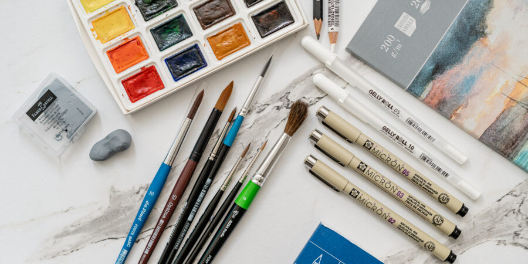

Последна изложба
Евелин Добрев и представи своята фотографска изложба "Пътувания
във времето". Тя се състои от 15 черно-бели фотоса, заснети
основно в Бургас и Филипините. Кадрите са минималистични и с
урбанистичен почерк.
За автора това е втора самостоятелна изложба пред родна публика.
Откриването се проведе на 16.11.2023г.
Уроци по рисуване за любители

Курсове по рисуване за начинаещи, напреднали и любители. Школници
могат да съчетаят удоволствието от обучението си в залите на
галерията с възможността да се запознаят с изключително богатата
колекция от над 500 творби на най-утвърдените съвременни български
автори, да изучат техния стил и техника на рисуване.
"От вестника до музея"
Изложбата включва около 150 български карикатури от фонда на
Националната галерия. Сред авторите са Илия Бешков, Александър
Жендов и други.
Това е опит за реконструкция на карикатурния жанр в
условията на тоталитарната система на управление на политическия,
обществен и културен живот в България между 1944 и 1989.
"Град на сенките“
Сборната експозиция „Град на сенките“ включва кадри от
едноименната легендарна серия, заснета в Санкт Петербург, Венеция,
Хавана и Ню Йорк (2004-2022). Фотографиите са ръчно проявени от
самия Титаренко в личната му лаборатория. Голяма част от
принтовете са единствени копия.